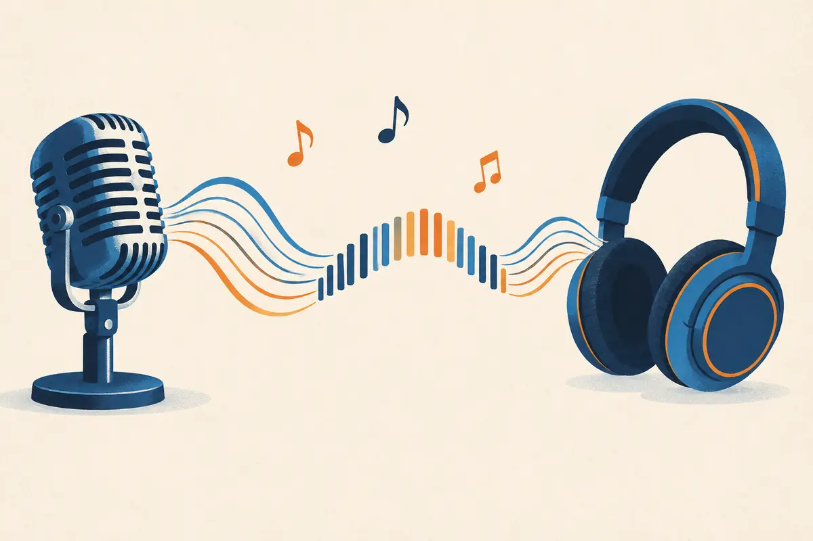

Sound as data
Before a model can transcribe, speak or compose, sound has to become numbers. This lesson follows a sound from air pressure to a list of integers, shows what can go wrong when you sample too slowly, and explains why one second of audio is thousands of times longer than one second of text.

By the end you can
- Compute the data rate and the number of samples of raw digital audio from its sample rate, bit depth and channels.
- Explain the Nyquist limit and predict the frequency an undersampled tone aliases to.
- Say which representation (raw waveform, log-mel spectrogram, codec tokens) different audio models use, and why.
Take a guess. A wrong guess now makes the right answer stick later.
Speech recognizers usually take audio at 16 kHz, mono. How many numbers is one second of it?
- 16
- 1,600
- 16,000
- 256,000
You record a pure 7 kHz whistle with a device that samples only 10,000 times per second. What do the samples look like?
- A perfect 7 kHz tone
- A 3 kHz tone
- Silence
- A 10 kHz tone
From air pressure to a list of numbers
Sound is a tiny, fast wobble in air pressure. For most of history the only way to keep it was as an analog copy: Edison's phonograph (1877) cut the wobble into a groove, tape stored it as magnetism. Copies of copies got noisier every time. In 1937 the engineer Alec Reeves proposed pulse-code modulation (PCM): measure the signal at regular moments and send each measurement as a number. Numbers can be copied perfectly. The theory of how often to measure came from Harry Nyquist (1928) and Claude Shannon (1949), and the audio CD (1982) put PCM in every living room.
A microphone turns pressure into a voltage that rises and falls over time: the waveform. An analog-to-digital converter then does two things:
- Sampling: it measures the voltage at a fixed sample rate $f_s$, in samples per second (hertz). At $f_s = 16$ kHz that's one measurement every $1/16{,}000$ s $= 62.5$ microseconds.
- Quantization: it rounds each measurement to the nearest of $2^b$ allowed levels, where $b$ is the bit depth. With $b = 16$ there are 65,536 levels.
The result is a plain list of integers. A .wav file is mostly exactly that list, plus a short header saying the sample rate, bit depth and number of channels.
Which two choices fully decide how faithfully a PCM recording captures a sound?
- How often you measure (sample rate) and how finely you round each measurement (bit depth)
- The file format and the playback volume
- The number of channels and the file name
- The length of the recording and the microphone's colour
Sample rate, Nyquist and aliasing
How often must you measure? The sampling theorem (the P5.5 recap): a signal whose highest frequency is $f_{\max}$ can be rebuilt exactly from its samples if
$$f_s > 2\,f_{\max}$$Half the sample rate, $f_s/2$, is the Nyquist frequency: the highest tone a given rate can represent. Real systems pick rates to match what matters:
- Telephone, 8 kHz: Nyquist 4 kHz, enough for intelligible speech (the classic phone band is about 300–3,400 Hz) but it sounds muffled, and "s" and "f" blur.
- Speech recognition, 16 kHz: Nyquist 8 kHz keeps nearly all the information that distinguishes speech sounds. Whisper and wav2vec 2.0 both resample their input to 16 kHz.
- Music, 44.1 or 48 kHz: Nyquist above 20 kHz, the upper limit of human hearing. Music generators and codecs for music typically work at 32–48 kHz.
Sample too slowly and something worse than "missing detail" happens. A tone above $f_s/2$ doesn't vanish: its samples are identical to those of a lower tone, so it comes back in disguise. A tone at frequency $f$ shows up at
$$f_{\text{alias}} = \left|\,f - k\,f_s\,\right|, \quad k = \text{the whole number nearest } f/f_s$$For the warm-up: $f = 7$ kHz, $f_s = 10$ kHz, $f/f_s = 0.7$, so $k = 1$ and $f_{\text{alias}} = |7 - 10| = 3$ kHz. Once sampled, nothing can tell the two apart. That's why converters put a low-pass (anti-aliasing) filter in front of the sampler, and why resampling audio from 44.1 kHz down to 16 kHz must filter first.
Playground: sample a tone, then sample it too slowly
Blue is the real tone over 2 milliseconds; orange dots are the samples; the dashed orange line is the lowest-frequency wave that passes through those samples, which is what you'd hear back. Drop the sample rate below twice the tone and watch the orange wave slow down.
Explain like I'm 5
Sound is a wiggly line drawn in the air. To save it, you put a dot on the line at every tick of a clock, and write down how high each dot is using a ruler with marks.
More ticks per second (sample rate) catch faster wiggles. More marks on the ruler (bit depth) record each height more exactly.
If the clock ticks too slowly, a fast wiggle gets dots that look like a slow wiggle, just like a spinning wheel in a film can look as if it turns backwards. That's aliasing.
Where it breaks: to play the sound back, you don't join the dots with straight lines. With enough ticks, the smooth curve through the dots is exactly the original sound.
Audio is sampled at 8 kHz. Which tone comes back as a 1 kHz alias?
- 3 kHz
- 4 kHz
- 9 kHz played at half volume
- 7 kHz
Bit depth and the data rate
Each sample is rounded to one of $2^b$ levels. The rounding error sounds like a faint hiss, quantization noise. Each extra bit doubles the number of levels and lowers that noise by about 6 decibels, so 16-bit audio has a dynamic range of about $16 \times 6.02 \approx 96$ dB, more than enough for speech. Studios record at 24 bits for headroom; telephone systems historically used 8 bits per sample with a non-uniform ("μ-law" or "A-law") scale that spends more levels on quiet sounds.
Multiply it out and you get the data rate of uncompressed PCM:
$$R = f_s \times b \times c \quad \text{bits per second}$$$f_s$ is the sample rate, $b$ the bits per sample and $c$ the number of channels (1 for mono, 2 for stereo). Divide by 8 for bytes.
Worked example
Speech for a recognizer: 16 kHz, 16-bit, mono.
- Samples per second: $16{,}000$.
- Bits per second: $16{,}000 \times 16 \times 1 = 256{,}000$, that is 256 kbit/s, or 32,000 bytes per second.
- One minute: $32{,}000 \times 60 = 1{,}920{,}000$ bytes, about 1.9 MB, and $960{,}000$ samples.
- Compare a CD: $44{,}100 \times 16 \times 2 = 1{,}411{,}200$ bit/s, about 1.4 Mbit/s.
Many neural speech codecs and TTS models work at 24 kHz, 16-bit, mono.
- Data rate in kbit/s:
- Samples in a 10-second clip:
- Studio audio is 48 kHz, 24-bit, stereo. Its data rate in kbit/s:
You switch a recording from 16-bit to 8-bit samples, keeping the sample rate. What happens?
- The highest frequency you can capture halves
- The file halves in size and the quantization noise gets about 48 dB louder
- Nothing audible changes, because the sample rate is the same
- The recording becomes stereo
Why raw audio is too long for a Transformer
Here's the problem for language-model machinery. People speak roughly 150 words a minute, about 2.5 words a second. With a typical text tokenizer (about 1.3 tokens per English word) that is roughly 3 text tokens per second. The same second of 16 kHz audio is 16,000 samples, about 5,000 times longer.
A 30-second voice message is 480,000 samples. Self-attention compares every position with every other (M1.1), so that's $480{,}000^2 \approx 2.3 \times 10^{11}$ scores per head per layer. Even a fast model can't afford that. So nearly every audio model first turns the waveform into a much shorter sequence:
- Log-mel spectrogram (P5.5): slice the audio into overlapping windows (typically 25 ms, hopping 10 ms), take each window's spectrum, pool it into 80 or 128 bands on the perceptual mel scale, and take the log. That's 100 frames per second, each a vector of 80–128 numbers. Used as the input of most speech recognizers, including Whisper (A1.2), and as the target of classic text-to-speech models (A1.4).
- Learned features from the raw waveform: a stack of strided convolutions reads samples directly and outputs a vector about every 20 ms (about 50 per second). wav2vec 2.0 and similar self-supervised models do this.
- Codec tokens (A1.3): a neural audio codec compresses audio into a few discrete tokens per frame, at 12.5 to 75 frames per second. Discrete tokens are what lets a language model generate audio: speech synthesis, music, voice assistants (A1.4–A1.6).
Two rules of thumb fall out of this. Understanding audio (recognition, classification) mostly uses continuous features like log-mel frames; generating audio with a language model needs discrete tokens, or a diffusion model over a compressed latent (A1.5). And either way, the frame rate decides how much audio fits in a context window.
A 30-second clip becomes log-mel frames with a 10 ms hop. Roughly how many frames is that?
- 30
- 300
- 3,000
- 480,000
Explain to a friend what sample rate and bit depth control, what aliasing is, and why models rarely feed raw samples to a Transformer.
What is the data rate of 22.05 kHz, 16-bit, mono PCM?
- 22.05 kbit/s
- 352.8 kbit/s
- 705.6 kbit/s
- 44.1 kbit/s
Why do speech recognizers typically resample to 16 kHz rather than keep 48 kHz?
- Speech information sits mostly below 8 kHz, so 16 kHz keeps it while cutting the sequence length by 3×
- Because 48 kHz audio can't be stored as PCM
- Because aliasing only happens above 16 kHz
- Because 16 kHz has a higher Nyquist frequency than 48 kHz
A text model's attention cost grows with the square of sequence length (M1.1). Replacing 16 kHz samples with 100-per-second log-mel frames shortens the sequence 160×. Roughly how much does that cut the number of attention scores?
- 160×
- 320×
- About 13×, the square root
- About 25,600×
Which representation lets a language model generate audio by predicting the next item from a fixed vocabulary?
- A log-mel spectrogram
- Raw 16-bit samples, read as floats
- Discrete tokens from a neural audio codec
- The file's header
Key takeaways
- Digital audio is PCM: samples taken $f_s$ times per second, each rounded to one of $2^b$ levels.
- A rate $f_s$ captures tones up to $f_s/2$ (Nyquist); higher tones alias to $|f - k f_s|$ unless filtered out first.
- Data rate $= f_s \times b \times c$: 16 kHz, 16-bit mono is 256 kbit/s and 16,000 samples per second.
- That's about 5,000× more positions than text tokens for the same speech, so models use log-mel frames (~100/s) or codec tokens (12.5–75 frames/s).
About 25 minutes with NumPy: synthesize tones, alias them on purpose, build an STFT and a mel filterbank by hand, and compute a log-mel spectrogram. No downloads; runs free in your browser.
Add this lesson's cards to your spaced-review deck.